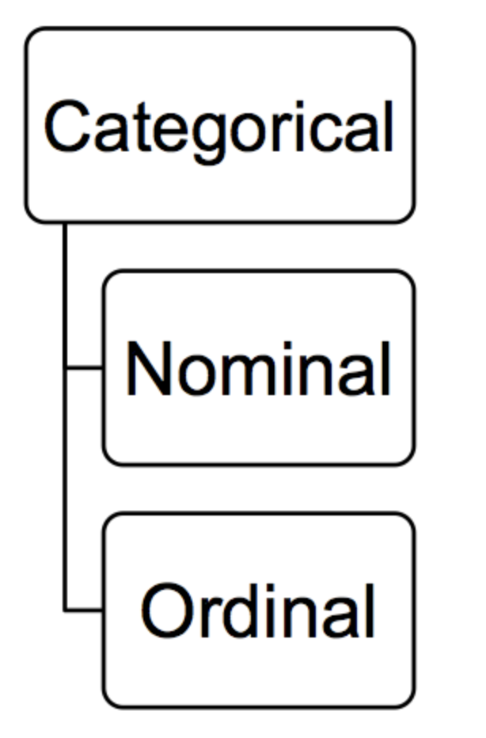
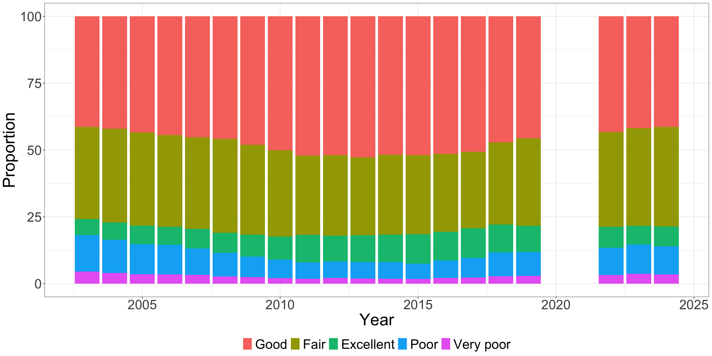

| Student.ID | Nationality |
|---|---|
| 12 | British |
| 6 | British |
| 34 | French |
| 2 | Dutch |
| 41 | French |
| 15 | British |
Univariate analysis of categorical variables
Sam Langton, University of Manchester
Making Sense of Criminological Data (Week 2)
Plan for today
- What is univariate analysis?
- Categorical variables
- Analysis
- Frequencies & percentages
- Stop-and-search example
- Visualisation
Univariate analysis
- Univariate = one variable
- Simple but common (and important)
- Typically summarising and describing

Categorical variables
- Two or more categories, such as:
- Nationality
- Crime type
- Education
- Nominal or ordinal

Analysis: frequencies
Analysis: frequencies
| Student.ID | Nationality |
|---|---|
| 12 | British |
| 6 | British |
| 34 | French |
| 2 | Dutch |
| 41 | French |
| 15 | British |
| Nationality | Count |
|---|---|
| British | 3 |
| Dutch | 1 |
| French | 2 |
Analysis: proportions
| Nationality | Count |
|---|---|
| British | 3 |
| Dutch | 1 |
| French | 2 |
Analysis: proportions
| Nationality | Count |
|---|---|
| British | 3 |
| Dutch | 1 |
| French | 2 |
| Nationality | Percent |
|---|---|
| British | 50 |
| Dutch | 17 |
| French | 33 |
Take a breather
Frequency & proportions
Are there differences between police forces with regards to the gender of individuals subject to stop-and-search?
Frequency & proportions
Are there differences between police forces with regards to the gender of individuals subject to stop-and-search?
| Type | Date | Latitude | Longitude | Gender | Self-defined ethnicity |
|---|---|---|---|---|---|
| Person and Vehicle search | 2025-07-19 04:40:36 | NA | NA | NA | NA |
| Person search | 2025-07-13 02:28:09 | NA | NA | NA | NA |
| Person search | 2025-07-21 15:01:42 | 53.45709 | -2.991129 | Male | White - English/Welsh/Scottish/Northern Irish/British |
| Person search | 2025-07-20 19:41:35 | 53.47402 | -2.724773 | Male | White - English/Welsh/Scottish/Northern Irish/British |
| Person search | 2025-07-05 20:05:55 | 53.40986 | -2.978522 | Male | White - Any other White background |
| Person search | 2025-07-24 00:08:05 | 53.44898 | -2.754491 | Male | White - English/Welsh/Scottish/Northern Irish/British |
| Person and Vehicle search | 2025-07-09 22:38:08 | 53.48892 | -3.041442 | Male | White - English/Welsh/Scottish/Northern Irish/British |
| Person search | 2025-07-20 02:04:27 | 53.40380 | -2.981662 | Male | White - English/Welsh/Scottish/Northern Irish/British |
| Person search | 2025-07-28 00:25:29 | 53.64673 | -3.010730 | Male | White - English/Welsh/Scottish/Northern Irish/British |
| Person search | 2025-07-08 21:51:12 | 53.42206 | -2.859064 | Male | White - English/Welsh/Scottish/Northern Irish/British |
| Person search | 2025-07-24 15:32:53 | 53.39128 | -2.956306 | Male | Other ethnic group - Arab |
| Person search | 2025-07-24 01:10:57 | 53.44062 | -2.698958 | Male | Black/African/Caribbean/Black British - African |
| Person search | 2025-07-05 23:50:53 | 53.64966 | -2.992887 | Male | White - English/Welsh/Scottish/Northern Irish/British |
| Person search | 2025-07-11 00:44:53 | 53.42132 | -2.974421 | Male | White - Any other White background |
| Person search | 2025-07-20 21:06:20 | NA | NA | NA | NA |
| Person search | 2025-07-10 17:22:37 | 53.44024 | -2.997029 | Male | White - English/Welsh/Scottish/Northern Irish/British |
| Person and Vehicle search | 2025-07-16 02:56:53 | 53.46011 | -2.707110 | Male | White - English/Welsh/Scottish/Northern Irish/British |
| Person search | 2025-07-14 00:08:29 | 53.45370 | -2.736640 | Male | White - English/Welsh/Scottish/Northern Irish/British |
| Person search | 2025-07-07 15:00:25 | 53.63854 | -2.983248 | Male | White - English/Welsh/Scottish/Northern Irish/British |
| Person search | 2025-07-25 22:16:22 | NA | NA | NA | NA |
Frequency table
| Gender | Count |
|---|---|
| Female | 601 |
| Male | 4047 |
| Other | 1 |
| Gender | Count |
|---|---|
| Female | 106 |
| Male | 729 |
| Other | 0 |
Proportion table
| Gender | Percent |
|---|---|
| Female | 13 |
| Male | 87 |
| Other | 0 |
| Gender | Percent |
|---|---|
| Female | 13 |
| Male | 87 |
| Other | 0 |
(no, it’s not a mistake)
Proportions not always ‘better’
What is the gender breakdown of individuals subject to stop-and-search in Chorlton between 1-7 September?
Proportions not always ‘better’
What is the gender breakdown of individuals subject to stop-and-search in Chorlton between 1-7 September?
| Gender | Percent |
|---|---|
| Female | 100 |
| Male | 0 |
| Other | 0 |
Data is fictitious!
Proportions not always ‘better’
What is the gender breakdown of individuals subject to stop-and-search in Chorlton between 1-7 September?
| Gender | Percent |
|---|---|
| Female | 100 |
| Male | 0 |
| Other | 0 |
| Gender | Count |
|---|---|
| Female | 1 |
| Male | 0 |
| Other | 0 |
Take a breather
Visualisation: bar plot
| Gender | Count |
|---|---|
| Female | 601 |
| Male | 4047 |
| Other | 1 |
| Gender | Count |
|---|---|
| Female | 106 |
| Male | 729 |
| Other | 0 |
